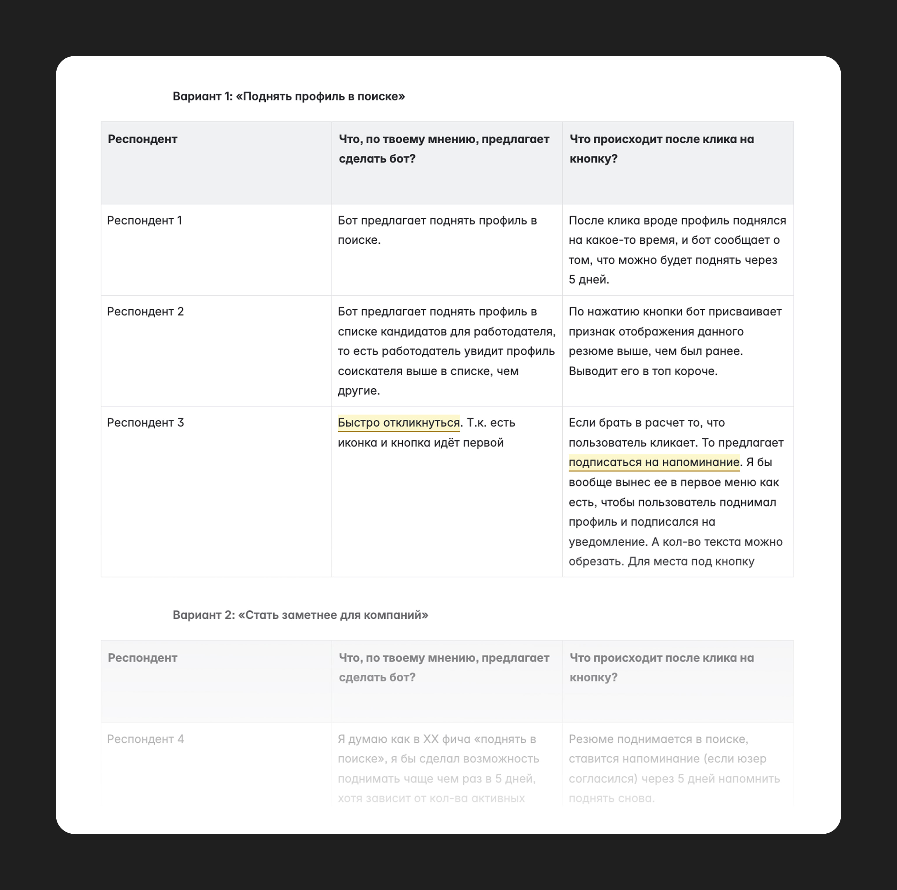
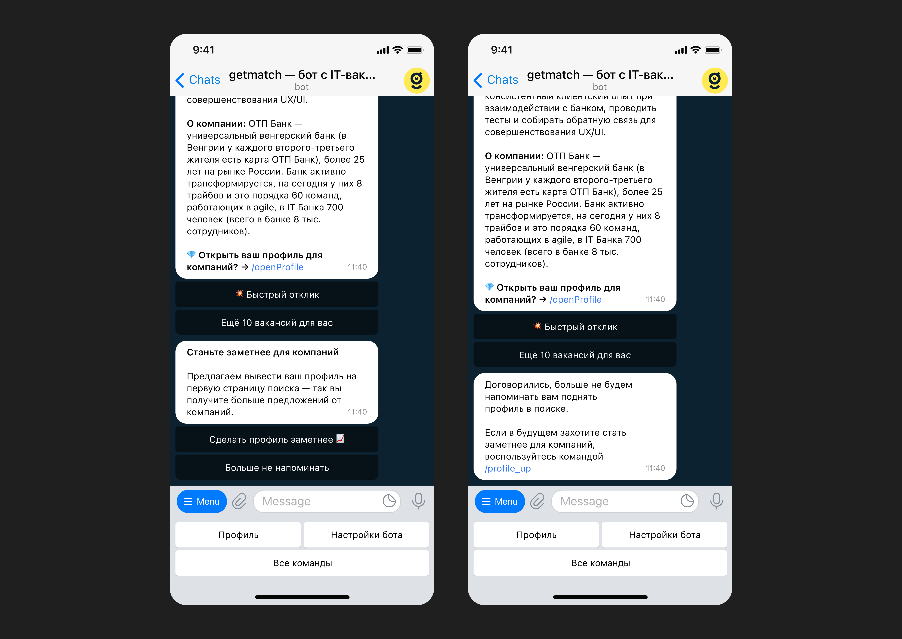

<!DOCTYPE html>
<html>
  <head>
    <meta charset="utf-8">
    <meta name="viewport" content="width=device-width, initial-scale=1.0">
    <meta name="description" content="Механика, которая помогает хорошим кандидатам не&amp;nbsp;потеряться в&amp;nbsp;ленте рекрутера, а&amp;nbsp;рекрутерам — видеть релевантных кандидатов, которых они могли упустить">
    <meta property="og:type" content="article">
    <meta property="og:title" content="Поднятие профиля в&amp;nbsp;getmatch • Артём Самсонов • Продуктовый дизайнер">
    <meta property="og:description" content="Механика, которая помогает хорошим кандидатам не&amp;nbsp;потеряться в&amp;nbsp;ленте рекрутера, а&amp;nbsp;рекрутерам — видеть релевантных кандидатов, которых они могли упустить">
    <meta property="og:image" content="http://artemsamsonov.com/img/case-05.jpg">
    <meta property="og:locale" content="ru_RU">
    <meta name="twitter:card" content="summary_large_image">
    <meta name="twitter:title" content="Поднятие профиля в&amp;nbsp;getmatch • Артём Самсонов • Продуктовый дизайнер">
    <meta name="twitter:description" content="Механика, которая помогает хорошим кандидатам не&amp;nbsp;потеряться в&amp;nbsp;ленте рекрутера, а&amp;nbsp;рекрутерам — видеть релевантных кандидатов, которых они могли упустить">
    <meta name="twitter:image" content="http://artemsamsonov.com/img/case-05.jpg">
    <link href="https://fonts.googleapis.com/icon?family=Material+Icons" rel="stylesheet">
    <link rel="stylesheet"><!-- Yandex.Metrika counter --> <script type="text/javascript" > (function(m,e,t,r,i,k,a){m[i]=m[i]||function(){(m[i].a=m[i].a||[]).push(arguments)}; m[i].l=1*new Date();k=e.createElement(t),a=e.getElementsByTagName(t)[0],k.async=1,k.src=r,a.parentNode.insertBefore(k,a)}) (window, document, "script", "https://mc.yandex.ru/metrika/tag.js", "ym"); ym(88097279, "init", { clickmap:true, trackLinks:true, accurateTrackBounce:true, webvisor:true }); </script> <noscript><div></div></noscript> <!-- /Yandex.Metrika counter -->
    <title>Поднятие профиля в&amp;nbsp;getmatch • Артём Самсонов • Продуктовый дизайнер</title>
    <script type="application/ld+json">
      {
        "@context": "https://schema.org",
        "@type": "Person",
        "name": "Артём Самсонов",
        "url": "https://artemsamsonov.com",
        "image": "https://artemsamsonov.com/og-preview.jpg",
        "sameAs": [
          "https://t.me/forrrealism",
          "https://www.linkedin.com/in/a-samsonov/"
        ],
        "jobTitle": "Ведущий продуктовый дизайнер",
        "worksFor": {
          "@type": "Organization",
          "name": "getmatch"
        }
      }
    </script>
  <link href="./css/style.bundle.css" rel="stylesheet"></head>
  <script type="application/ld+json">
    {
      "@context": "https://schema.org",
      "@type": "CreativeWork",
      "name": "Поднятие профиля в getmatch",
      "alternateName": "Профиль кандидата — стать заметнее",
      "headline": "UX-механика для повышения видимости кандидатов в ленте",
      "description": "Как я спроектировал механику «Стать заметнее» в getmatch — чтобы хорошие кандидаты не терялись в ленте рекрутеров. Решение увеличило шансы на найм, оживило базу и повысило вовлечённость",
      "url": "https://artemsamsonov.com/getmatch-up",
      "author": {
        "@type": "Person",
        "name": "Артём Самсонов",
        "url": "https://artemsamsonov.com"
      },
      "datePublished": "2025-06-27",
      "dateModified": "2025-06-27",
      "inLanguage": "ru",
      "mainEntityOfPage": "https://artemsamsonov.com/getmatch-up",
      "image": {
        "@type": "ImageObject",
        "url": "https://artemsamsonov.com/img/case-05.jpg",
        "width": 1152,
        "height": 768
      }
    }
  </script>
</html>
<body class="body_light">
  <header class="header header_light">
    <div class="header__logo"><a href="index.html">Артём Самсонов</a></div>
    <div class="header__menu"><a class="header__menu-elem" href="https://t.me/forrrealism">telegram</a><a class="header__menu-elem" href="https://www.linkedin.com/in/a-samsonov/">linkedin</a></div>
  </header>
  <div class="content">
    <div class="article">
      <section>
        <h1>Поднятие профиля в&nbsp;getmatch</h1>
        <p class="article__annotation">Механика, которая помогает хорошим кандидатам не&nbsp;потеряться в&nbsp;ленте рекрутера, а&nbsp;рекрутерам — видеть релевантных кандидатов, которых они могли упустить.</p>
        <h2>Мой вклад</h2>
        <div class="article__tags">
          <div class="tag--S tag">Формулировка JTBD</div>
          <div class="tag--S tag">Usability Test</div>
          <div class="tag--S tag">UX-дизайн в&amp;nbsp;Telegram</div>
          <div class="tag--S tag">UXW-лидерство</div>
          <div class="tag--S tag">Анализ количественных метрик</div>
        </div>
        <h2>Проблема</h2>
        <div class="article__2-cols">
          <div class="article__col"> 
            <h3>Для&nbsp;кандидатов</h3>
            <p>Хорошие профили быстро уходят вниз в&nbsp;ленте и&nbsp;не&nbsp;получают откликов. Кандидатам кажется, что они пропали для&nbsp;рекрутеров</p>
          </div>
          <div class="article__col">
            <h3>Для&nbsp;клиентов</h3>
            <p>Рекрутеры упускают подходящих кандидатов, потому что редко идут дальше второй страницы + кто-то подключился недавно</p>
          </div>
        </div>
        <h2>Job to be Done</h2>
        <div class="article__2-cols">
          <div class="article__col">
            <h3>Для&nbsp;кандидата</h3>
            <p>Напомнить о&nbsp;себе рекрутерам, чтобы не&nbsp;пропасть из&nbsp;поля зрения и&nbsp;получать приглашения на&nbsp;интервью</p>
          </div>
          <div class="article__col"> 
            <h3>Для&nbsp;компаний</h3>
            <p>Не&nbsp;пропустить хорошего кандидата, если я недавно работаю в&nbsp;системе или&nbsp;смотрю только новых</p>
          </div>
        </div>
        <h2>Задача</h2>
        <p>Сделать так, чтобы:</p>
        <ul>
          <li>хорошие кандидаты не&nbsp;терялись внизу списка</li>
          <li>хорошие кандидаты мягко напоминали о&nbsp;себе</li>
          <li>рекрутеры видели подходящих кандидатов</li>
        </ul>
        <h2>Решение</h2>
        <p> Спроектировали механику поднятия профиля в&nbsp;ленте. Кандидат может поднять профиль раз в&nbsp;5 дней в&nbsp;нашем телеграм-боте.</p>
        <p>Перед&nbsp;разработкой провели юзабилити-тест: совместно с&nbsp;UX-писателем создали два варианта текста и&nbsp;показали каждый из&nbsp;них пятерым пользователям. Первый вариант опирался на&nbsp;действие («поднять профиль»), второй — на&nbsp;потребность («стать заметнее для&nbsp;компаний») ↓</p>
        <p class="article__image"><a href="../img/getmatch-calc-01.jpg" target="_blank"></a><span class="article__image-caption">Таблица ответов</span></p>
        <p>Респонденты поняли оба варианта, но&nbsp;победил второй флоу, опиравшийся на&nbsp;пользовательскую проблему «хочу стать заметнее для&nbsp;компаний». Победил во&nbsp;многом из-за&nbsp;сходства с&nbsp;уже знакомым функционалом HeadHunter.</p>
        <p class="article__image"><a href="../img/getmatch-calc-02.jpg" target="_blank"></a><span class="article__image-caption">Победил вариант справа</span></p>
        <p>Стать заметнее можно, нажав на&nbsp;соответствующую команду в&nbsp;меню:</p>
        <p class="article__image"><a href="../img/getmatch-calc-03.jpg" target="_blank"></a></p>
        <p>Если кандидат уже становился заметнее, мы можем напомнить о&nbsp;возможности спустя пять дней:</p>
        <p class="article__image"><a href="../img/getmatch-calc-04.jpg" target="_blank"></a></p>
        <p>Стать заметнее могут только пользователи с&nbsp;открытым профилем. Перед&nbsp;открытием профиль модерирует наш специалист. Пока профиль проверяется, стать заметнее не&nbsp;получится. Для&nbsp;этого кейса запоминаем желание юзера и&nbsp;выполняем позже:</p>
        <p class="article__image"><a href="../img/getmatch-calc-05.jpg" target="_blank"></a><span class="article__image-caption">А&nbsp;на&nbsp;скриншоте справа — текст технической ошибки</span></p>
        <p>Если пользователю надоело становиться заметнее, он может попросить больше не&nbsp;напоминать ему об&nbsp;этой возможности:</p>
        <p class="article__image"><a href="../img/getmatch-calc-06.jpg" target="_blank"></a></p>
        <h2>Результаты</h2>
        <ul>
          <li>
            <attr>NDA</attr> дополнительных наймов в&nbsp;месяц
          </li>
          <li>cтарые кандидаты начали получать предложения — у&nbsp;них возродилось ощущение, что сервис живёт и&nbsp;работает</li>
          <li>скрытия профилей рекрутерами выросли на&nbsp;17%</li>
        </ul>
        <p>Период в&nbsp;5 дней оказался слишком частым. Некоторые пользователи подбрасывали свой профиль каждый раз и&nbsp;мозолили рекрутерам глаза, провоцируя их скрывать себя из&nbsp;ленты навсегда. Одновременно с&nbsp;этим рекрутерам стало тяжелее добираться до&nbsp;только-только добавленных кандидатов.</p>
        <p>Через&nbsp;месяц после релиза мы увеличили период до&nbsp;15 дней и&nbsp;стали показывать поднятые профили после свежих. Метрики одобрения поднятых кандидатов немного упали, но&nbsp;всё равно остались выше изначальных значений.</p>
        <h2>Чему я научился</h2>
        <p>Возможно, в&nbsp;нашем продукте при&nbsp;написании текстов лучше опираться на&nbsp;пользу и&nbsp;JTBD, а&nbsp;не&nbsp;на&nbsp;действие (NB: проверить в&nbsp;других фичах).</p>
        <p>Ещё лучше изучил особенности UX-проектирования интерфейсов для&nbsp;Telegram-ботов. </p>
        <p>Если мотивация и&nbsp;польза неявны, то фича вызовет отторжение (<a href="https://www.nirandfar.com/hooked/">Nir Eyal, Hooked Model</a>).</p>
        <div class="sign"><strong>Артём Самсонов,</strong>ведущий продуктовый дизайнер
          <p><a href="https://artemsamsonov.com">artemsamsonov.com</a> <br> telegram: @forrrealism <br> почта: sayocean450🐶gmail.com</p>
        </div>
      </section>
    </div>
  </div>
<script type="text/javascript" src="./js/bundle.js"></script></body>